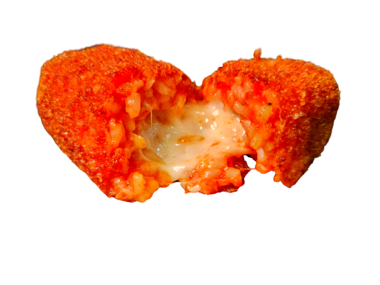

Sono un antipasto tipico della cucina tradizionale romana.
All'interno ho riso, pomodoro e un morbido
ripieno di mozzarella filante.
Una panatura dorata mi avvolge proteggendomi.
Croccante fuori e tenero dentro,
scaldo il cuore già al primo morso.

a volte sono una emoticon
Riempio le chat con il mio dolce faccino.
Se mi vedi non puoi resistere alla tenerezza che
trasmetto con i miei occhioni scintillanti.
Sono un aggettivo, un nome, uno stile di vita.
Diffondimi e allegami ai tuoi messaggi migliori.